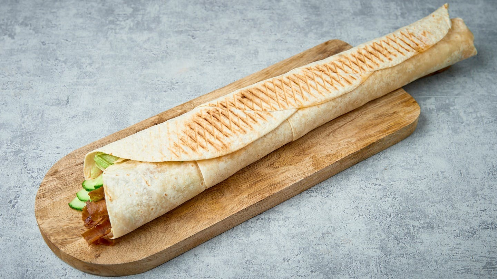
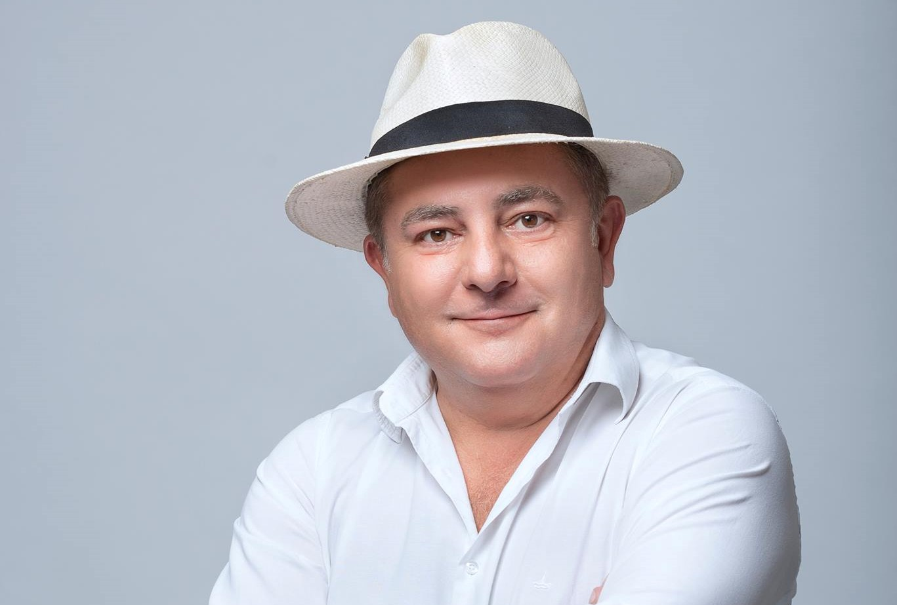

Kebab Tygodnia:
- cena: 30 pln
- długość: 50cm
- sos: ostry/łagodny
- mięso: baranina/kurczak
Kebab Olbrzym:

Nasza restauracja otrzymała liczne nagrody kulinarne w tym najważniejszą nagrodę najlepszego kebaba w Polsce otrzymaną za zajęcie 1 miejsca w konkursie organizowanym przez samego Roberta Makłowicza. To pozwoliło zyskać restauracji popularność w całym kraju. Odwiedzili ją liczni celebryci i smakosze.